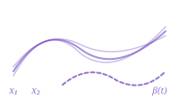

Learn
Get started, preprocess, and simulate functional data.

Introduction to fdars

Custom Plotting

Introduction to Smoothing

Working with Derivatives

Simulation Toolbox

Irregular Sampling
Represent
Decompose, transform, rank, and measure functional data.


Align
Register and align curves to remove phase variability.


Regression
Regression, classification, and mixed models for functional data.

Nonparametric Regression

Functional Regression

Classification

Mixed Models

Cross-Validation
Analyze
Infer, cluster, detect outliers, and test functional data.